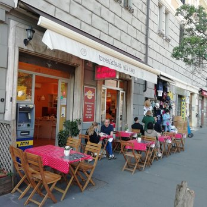
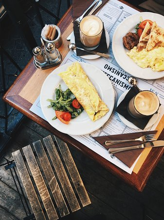
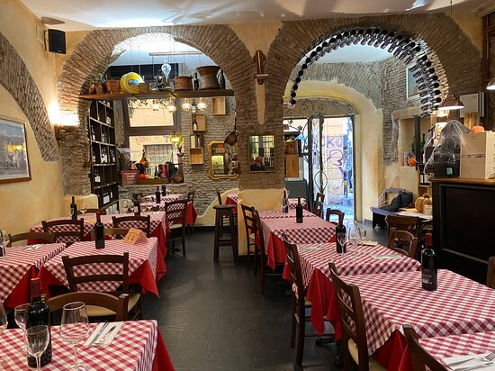
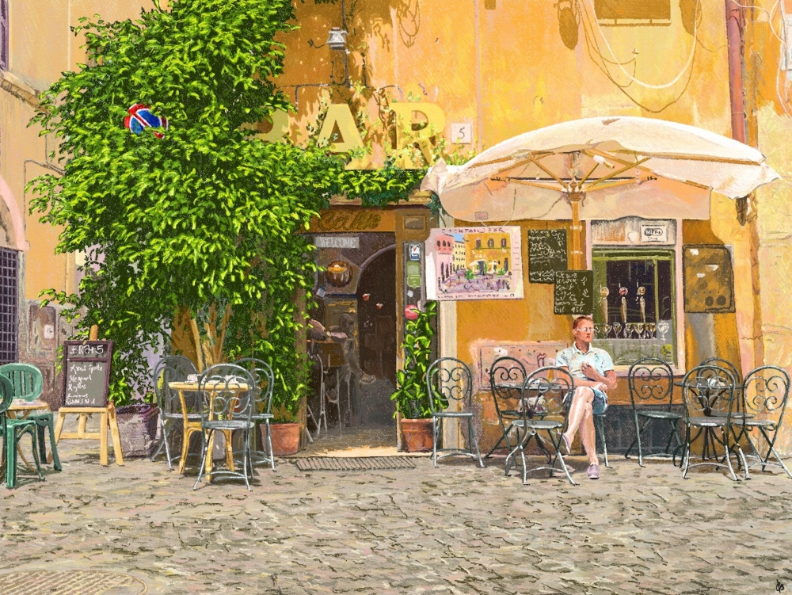
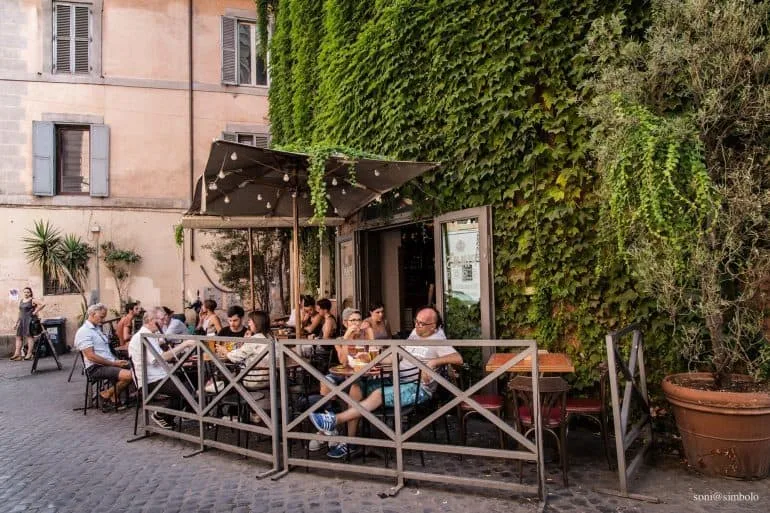
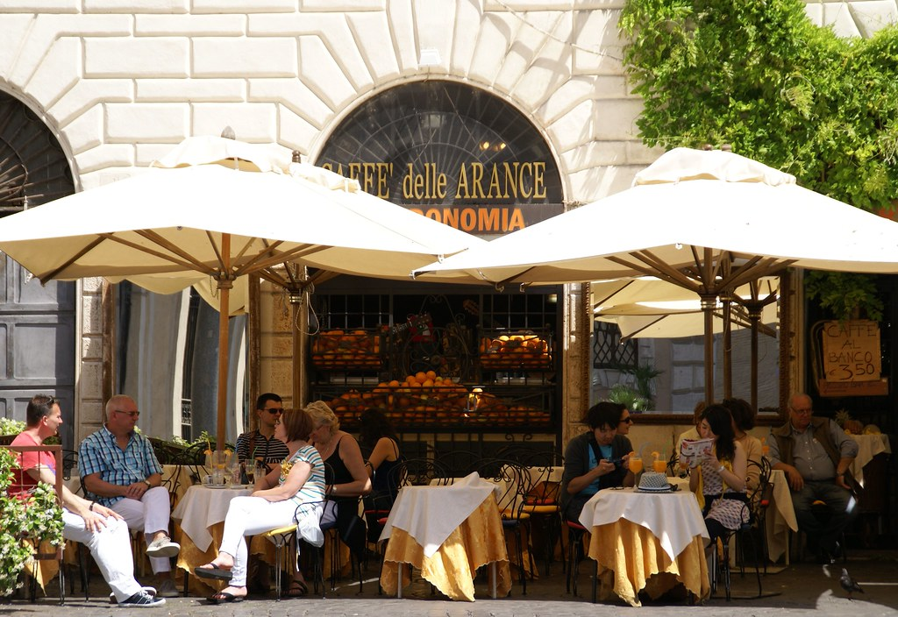
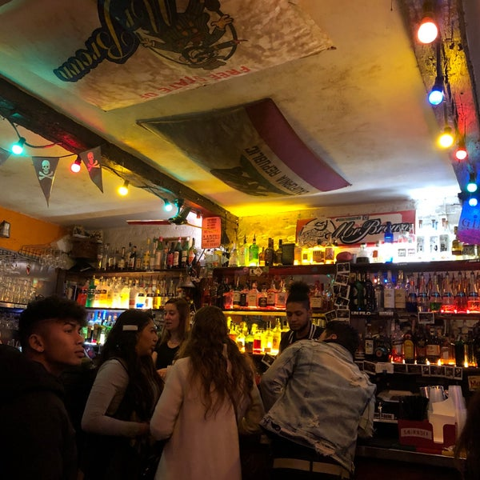
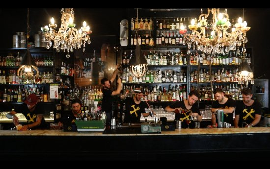
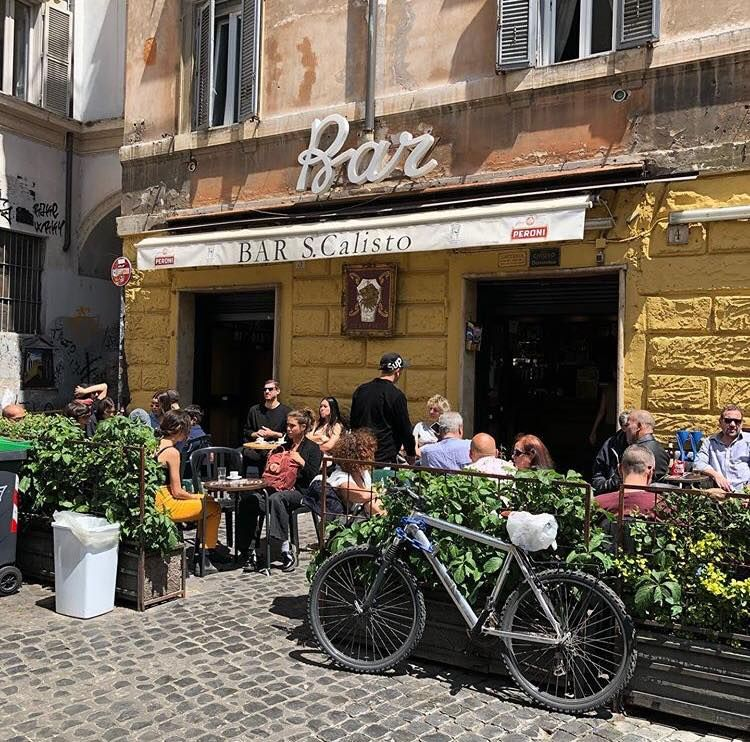

Bars
Great for a morning espresso or a nightcap.
Not your typical bar.
Italian coffee bars seamlessly integrate the country's love for coffee with a spirited culture of alcoholic beverages. Beyond the aromatic espresso shots that kickstart the day, Italian coffee bars transform into social hubs as the day progresses. The iconic aperitivo tradition, originating in Italy, is a prime example. In the early evening, bars lay out enticing spreads of snacks, encouraging patrons to enjoy a pre-dinner drink, fostering camaraderie, and whetting appetites.
Morning Coffee
Homebaked

A classic American diner in the heart of Rome, for a classic American breakfast.
Meccanismo

An all-day cafe in Piazza Trilussa, known for it's fresh coffee and generous portions.
Cafe Del Moro

Known for its lunch menu, Cafe Del Moro is great for a mid-morning espresso shot.
Evening Spritz
Del Cinque

A funky Italian eatery that has affordable drinks and delicious appetizers.
Pimms Good

Pimms is always a bustling location during Aperol Spritz season in the early spring.
Caffe Arance

An ideal spot for a slow evening, a glass of Italian wine, and live music on occasion.
Nightcap
Mr. Brown's Pub

A popular backpackers bar with a unique atmospher and an international beer selection.
Freni e Frizioni

An iconic Trastevere bar that offers round-the clock service and a wide array of drinks.
San Calisto

San Calisto is consistently filled with friendly patrons, laughes, and cheap drinks.